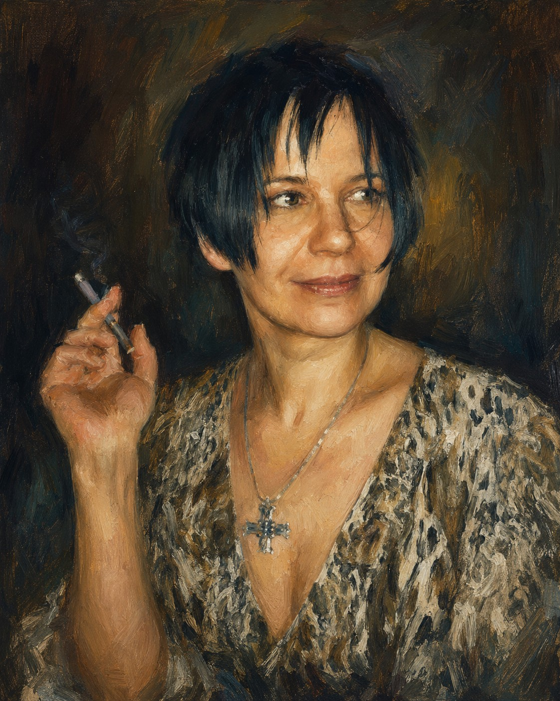
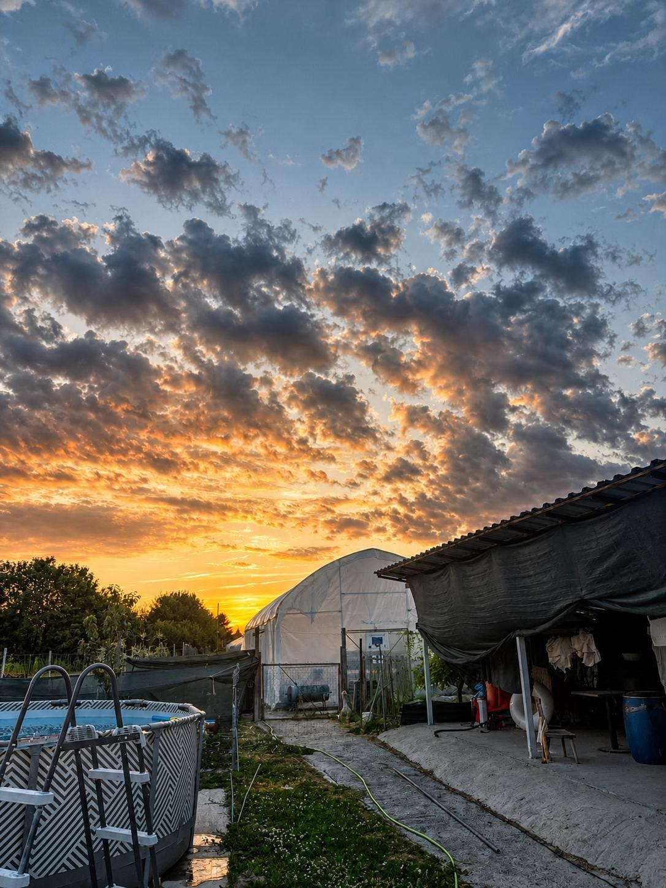
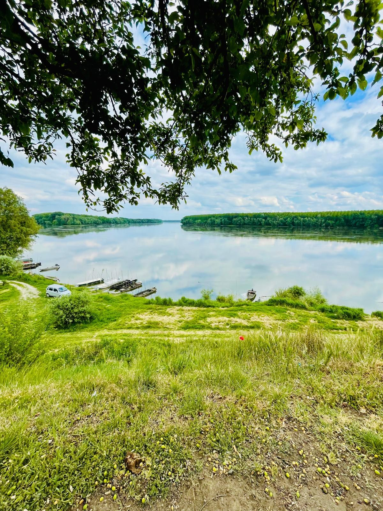
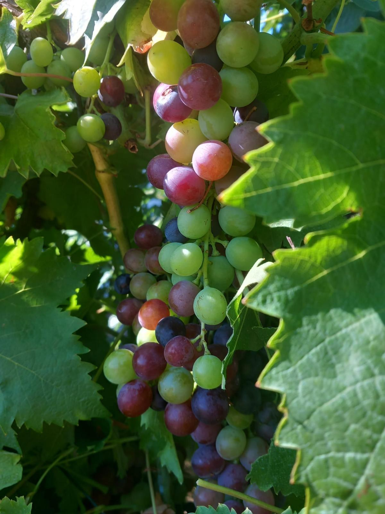
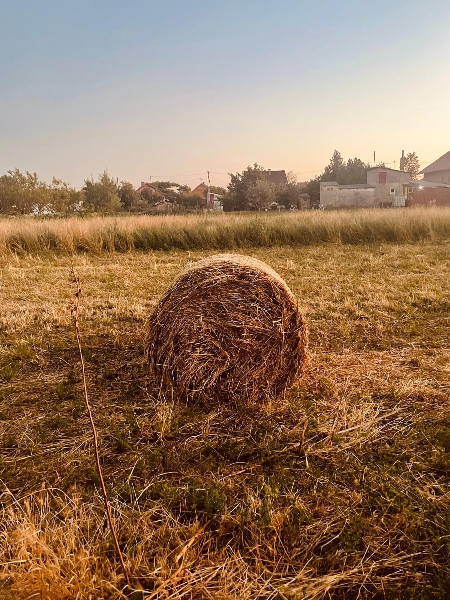
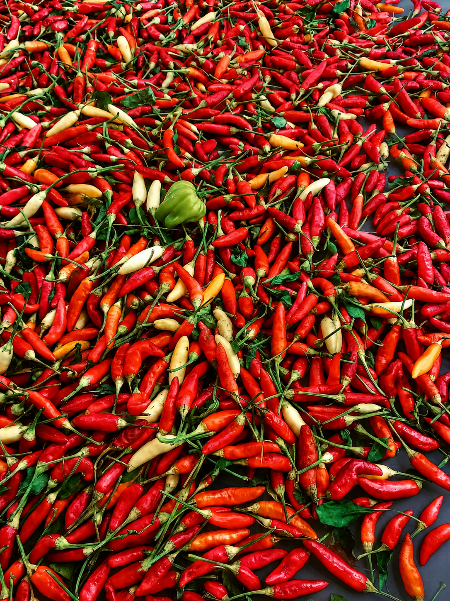
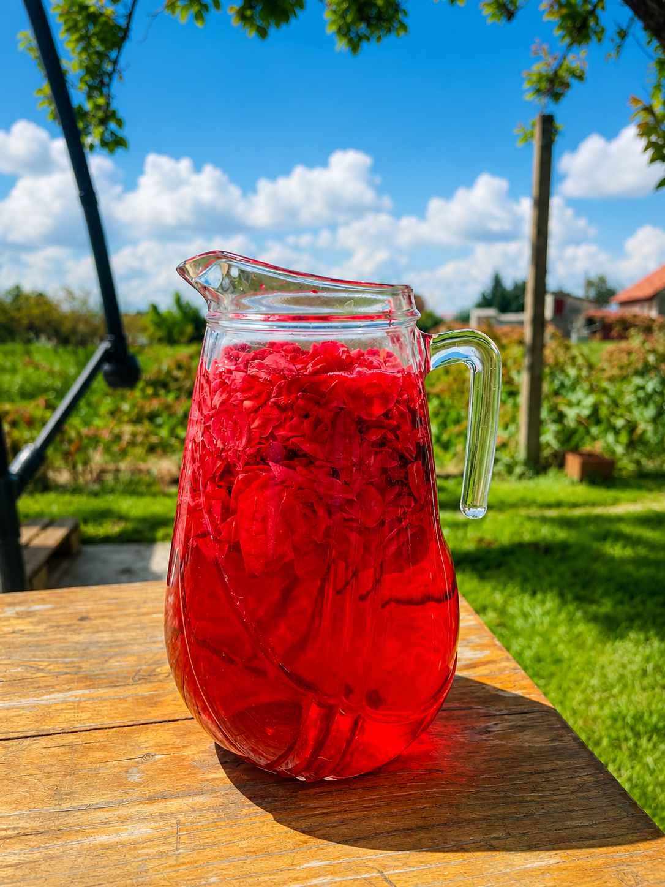

Odabrani radovi
Svaki rad nosi vlastitu priču.
Izbor originalnih radova Hanadi Rašić — od pejzaža i životinjskih motiva do reljefnih i teksturalnih kompozicija.
“Ne slika zato da bi stvarala velik broj slika. Slika zato što ima potrebu nešto ostaviti na platnu.”

Umjetnička interpretacija portreta prema obiteljskoj fotografiji.O umjetnici
Hanadi Rašić
Rođena 1969. u Osijeku, danas živi i stvara u Dalju, uz Dunav, vrtove, vinovu lozu i poljoprivredne kulture koje se mijenjaju sa svakim godišnjim dobom.
Slikarstvo je s vremenom postalo mnogo više od hobija — prostor slobode, mira i osobnog izražavanja. Njezini radovi nastaju ručno i često istražuju teksturu, reljef, atmosferu i motive prirode.
Njezin svijet nije odvojen od prostora u kojem živi. Dunav, ravnica, plastenici, vrt i životinje dio su svakodnevice iz koje nastaje njezina vizualna priča.
Posebno je vezana uz životinje i svoj dom dijeli s tri psa i pet mačaka. Sva tri psa udomila je nakon teških iskustava iz prijašnjih domova.
Uz slikarstvo, njezin senzibilitet oblikuju glazba i introspektivnija estetika — Nick Cave, Depeche Mode i Morrissey.
Mjesto stvaranja
Između vrta, plastenika i rijeke.
Umjetnost ovdje ne nastaje u sterilnom studiju. Nastaje u stvarnom prostoru — među zemljom, godišnjim dobima, Dunavom i svakodnevnim životom.







Iza slika
Umjetnost koja je rasla uz život.
Prije galerije, naziva radova i cijena postoji osobna priča. Obitelj, svakodnevica, glazba, životinje i dom dio su istog svijeta iz kojeg danas nastaju slike.
Fotografije iz privatne obiteljske arhive.


Kontakt i dostupnost
Pronađite rad koji govori vama.
U sljedećoj verziji ovdje će biti navedeni dostupni radovi, dimenzije, cijene i izravan kontakt za upite.
Radni koncept · podaci o prodaji još nisu objavljeni.